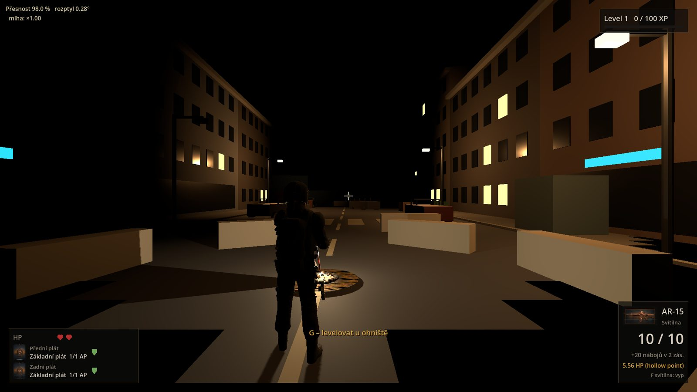
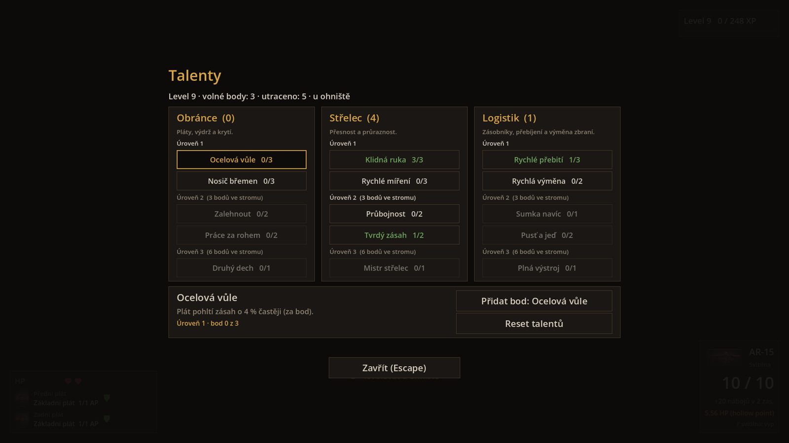

Co je nového
Seznam změn je u každého vydání.
O hře
Dvě postavy
Warden – těžký operátor s puškou a pláty. Ghost – rychlá a tichá, s laserem na zbrani.
Pláty a balistika
Přední a zadní plát pohlcují zásahy, dokud nepraskne. Střely letí, odrážejí se a prorážejí materiály.
Ohniště
U ohně si odpočineš: doplníš zdraví a náboje a utratíš XP. Po smrti zůstane krvavá skvrna s tvým XP – vrať se pro ni. Batoh je ale pryč.
Kooperace
Hraj s přáteli na dedicated serveru – sdílený svět, monstra a loot. Padlé spoluhráče oživíš odpočinkem u ohně.
Talentové stromy
Každá postava má tři stromy. Body z levelů rozděluješ volně mezi ně.
Ze hry


Ovládání
Myš a klávesnice
| WASD | pohyb (i diagonálně), míří se kurzorem myši |
| LMB / RMB | střelba / míření |
| Mezerník | úhyb, podržet u půlstěny = přeskok |
| C | skrčení |
| Q | krytí: za roh se vykloní, u půlstěny skrčí |
| R | přebití (2× = krizové) |
| V | dopáskovat zásobník ke zbrani v ruce |
| 1 2 / kolečko | přepnutí zbraně |
| F L N | svítilna, laser, noční vidění |
| G | interakce, u ohně odpočinek a level |
| 3 4 | granát: podržet = pojistka a nápřah, pustit = hod |
| T / Tab | talenty u ohně / inventář |
| Shift / Ctrl + klik | v inventáři: do batohu / zahodit |
| F1 | nápověda: všechny zkratky |
| Alt + QWER | idle animace (postoj, puška na rameno, poskakování, cigareta) |
Gamepad (Xbox)
| levá / pravá páčka | pohyb / směr míření |
| RT / LT | střelba / míření |
| A | úhyb, podržet = přeskok |
| B / X / Y | skrčení / přebití / zbraň |
| LB | krytí |
| D-pad | svítilna, NVG, munice, interakce |
| R3 / L3 | laser / granát (podržet, pustit = hod) |
| Back / Start | inventář / pauza |
| LB + tlačítko | zbraně 1/2 (Y), 2. granát (L3), talenty (Back), nápověda (Start) |
Všechno se dá přenastavit ve hře v Nastavení → Ovládání.
Dedicated server
Server pro multiplayer
Samostatný program bez grafiky – běží na počítači nebo VPS a hráči se k němu připojí ze hry přes Multiplayer. Hru samotnou ke hraní nepotřebuje.
Jak ho spustit
- Rozbal archiv a v
server.jsonpřípadně uprav název, mapu a počet hráčů. - Spusť
start-server.bat(Windows) nebo./AshenDepthsServer.x86_64(Linux). - Povol ve firewallu / na routeru port 24870 UDP.
- Hráči zadají ve hře adresu serveru, např.
192.168.1.10nebomuj-server.cz:24870.
Podrobnosti jsou v README.md v archivu. Hra a server musí být ze stejné verze.
Spuštění
- Windows: rozbal zip a spusť
AshenDepths.exe. Hra zatím není podepsaná, takže SmartScreen může varovat – „Další informace → Přesto spustit“. - Linux: rozbal archiv a spusť
./AshenDepths.x86_64. Windows verze běží i přes Proton (Faugus, Steam, Lutris). - Multiplayer: v menu zvol Multiplayer a zadej adresu serveru. Vlastní server si můžeš rozjet – viz Dedicated server.
- Požadavky: 64bitový systém a grafika s podporou Vulkanu.
- Hra je ve vývoji – postavy, mapy i vyvážení se budou měnit.